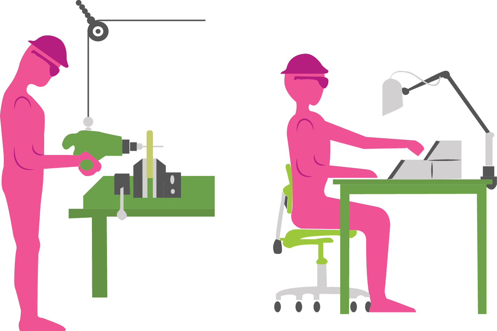

Os fatores condicionantes que influenciam o estado de saúde do indivíduo no ambiente físico são os seguintes componentes: clima, alimentação, radiação, ruído, água, resíduos, saneamento básico e solo.
A degradação ambiental vem afetando os ecossistemas e causando o desequilíbrio de diversas formas de vida que integram a diversidade natural e, consequentemente, produzindo riscos e agravos à saúde coletiva. Muitas doenças são acometidas devido a esses fatores, pois o homem cada vez mais, degrada o ambiente no qual habita.
Por isso, preservar o meio ambiente é preservar uma boa qualidade de vida para você e para todos a sua volta!